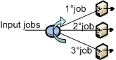
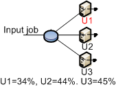

_____________________
Customers that arrive at this station are delayed for the amount of time that defines the station service time. They do not experience any queueing, since a delay station is modelled as a station with an infinite number of servers with identical service time. Because customers never have to wait for service, response time at delay stations is equal to service time, Ri = Si. Furthermore, the queue length corresponds in this case to the number of jobs receiving service since there is no waiting: Qi = RiXi = SiX = Ui. The utilization of the delay center represents the average number of jobs receiving service.
Delay centers are used when it is necessary to force some known average delay. A common application of delay centers is to model transmission time of large amounts of data over a dedicated low speed transmission line.
Set or change the properties:
Double click on the icon representing the delay station to see the property panel:
Station Name: is the name of the station in the model
Service Section:
Delay stations are infinite servers with identical service time, therefore they only need the service time distribution. The infinite number of servers provides for equal average response time for all jobs, as no job waits in queue for service.
In this section, the load dependent or independent nature of the service time is also specified for each class in server stations.
For each class, you must specify whether the service time is Load Dependent or Load Independent using this menu:
Load Indipendent: A load independent service indicates that, regardless of the number of jobs that are in the station, the system will serve all jobs following a fixed policy modelled by the chosen statistical distribution. To choose the Distribution press the  button and insert all neccesary parameters from this window:
button and insert all neccesary parameters from this window:
 |
The following service time distributions are supported:
|
Load Dependent: A load dependent service time indicates that the amount of time the server spends with each customer depends upon the current number of customers in the station. A set of intervals for the number fo jobs in the station is specified, either by adding one range at a time via the button or by specifying the total number at once. Each range must them be specified by its lower (From) and upper (To) extremes. Each such range can be associated with different service times, as for the distribution, the mean and the coefficient of variation, or a subset thereof.
To set the parameters of a Load Dependent service time, click the  to edit the Service Time Distribution. This panel appearbutton and then specify the parameters for each added range:
to edit the Service Time Distribution. This panel appearbutton and then specify the parameters for each added range:

For each customer number range you must specify the following parameters:
Distribution: you can choose among Pareto, Erlang, Exponential, Hyperexponential, Poisson, Uniform, Constant, Gamma and Normal distribution.
Mean: the mean value of each distribution is specified in the "Mean" form by double clicking on it. Insert a number or an arithmetic expression that will be evaluated with JFEP - Java Fast Expression Parser by Bertoli Marco. For a complete list of the command supported by JFEP you can read the "Help" tab or see the official JFEP web site at http://jfep.sourceforge.net/
C: The coefficient of variation of each distribution (when C exist) can be specified by double clicking on the "C" form. For example, in the previous picture two policies are defined:
From 1 to 4 jobs in the station, the server will behave according to an Erlang distribution with mean = 1 and C = 0.5. For any number of jobs greater or equal to 5 in the station, the system will behave according to an Exponential distribution with mean = 1.
If you want to delete a range click
.
In the routing section, for every class defined, you can decide how the completed jobs are routed to the other devices connected to station for which the routing strategy is defined.

For each class, select the algorithm you want to use for outgoing connections.
|
With this strategy, jobs are routed randomly to one of the stations connected to the routing device. The outgoing links are selected with the same probability.The figure illustrates the routing strategy with 3 output links. For each link the probability to be selected is 1/3.
|
|
With this algorithm, jobs are cyclically routed to the outgoing links according to a circular routing. As the figure shows, the first job is sent to the top station, the second job is sent to the central station, and the third job is sent to the bottom station. The next job would be sent to the top station again, and so on.  |
|
With this algorithm, you can define the routing probability for each outgoing link.The sum of all probabilities must equal 1. If the values provided do not satisfy the constraint, JSIM automatically normalizes the values before the simulation starts. This strategy requires that you define the probability foreach output link via the panel on the bottom right of the window.
|
|
With this strategy, each job is routed to the device that has the smallest queue length, i.e., number of jobs waiting, at the time the job leaves therouting station. The figure shows a case where the queue lenghts at the devices are 3, 2, and 1 jobs, respectively, from top to bottom. The exitiing job will be routed to the bottom station, since its queue is the shortest(1 job).
|
|
With this algorithm, jobs are sent to the station where the average response time for the job's class is the smallest at the moment a job leaves the routing station.The figure shows that at the time of routing, the middle station has the smallest average response time, R, so the job will be sent to it.
|
|
With this strategy, the destination device is chosen as the one with the smallest average utilization at the time routing is performed. In the example depicted in the picture, the top station is the least utilized, so it will receive the next job to leave the blue station.  |
|
With this strategy, a job is routed to the device with the smallest average service time, S, for the job's class. In the figure, the exiting job will be routed to the top station since it service time is the minimum among the three.
|